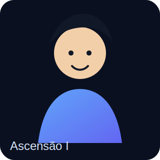

NefroQuest: Ascencion
Modo RPG para prova de título — cartas randomizadas sem repetição até o fim do baralho.

Noviço da Filtração
"Cada néfron salvo é uma vitória."
XP 0 / 120
Nível1
Pontos0
Vidas❤❤❤
Recorde0
Ouro0
Streak0
Equipamentos
Jornada
Escolha a melhor resposta.